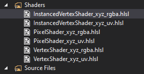

Lesson 3: Shaders
Introduction
We need a vertex shader and a pixel shader. These are little programs that tell directx how to process our graphics data. There are nearly infinite ways to use them but since our next lesson is just a colored triangle our requirements are simple.
The vertex shader will just output the vertices we supplied in our init() function. The pixel shader will output the color we supplied as well. At this point it seems silly we need these and for many of us overwhelming to learn a shader language on top of the very tedius DirectX API.
Let's knock out that vertex shader first.
The Vertex Shader
float4 VS(float4 inPos : POSITION) : SV_POSITION
{
return inPos;
}
The Pixel Shader
float4 PS() : SV_TARGET
{
return float4(0.0f, 0.0f, 1.0f, 1.0f);
}
A few more bits
We need to put this in our init() method. These are the vertex structure and input layout. This has to be just right or it won't work at all. It holds byte offsets and semantics that the shaders will need to do their jobs.
//The vertex Structure
struct Vertex
{
D3DXVECTOR3 pos;
D3DXCOLOR color;
};
//The input-layout description
D3D11_INPUT_ELEMENT_DESC layout[] =
{
{"POSITION", 0, DXGI_FORMAT_R32G32B32_FLOAT, 0, 0, D3D11_INPUT_PER_VERTEX_DATA, 0},
{"COLOR", 0, DXGI_FORMAT_R32G32B32A32_FLOAT, 0, 12, D3D11_INPUT_PER_VERTEX_DATA, 0}
};
A few more COM objects
These add up quickly. Your scene's static geometry can all fit in one buffer that is marked as immutable (for efficiency) whereas modifiable geometry can be placed in another buffer.
ID3D11Buffer* triangleVertBuffer;
ID3D11VertexShader* VS;
ID3D11PixelShader* PS;
ID3D10Blob* VS_Buffer;
ID3D10Blob* PS_Buffer;
ID3D11InputLayout* vertLayout;
Cleaning up
Don't forget to add the proper entries into the cleanup() function.
triangleVertBuffer->Release();
VS->Release();
PS->Release();
VS_Buffer->Release();
PS_Buffer->Release();
vertLayout->Release();
Compiling the shaders
MSDN actually has a great piece of code for doing this. I use it in my projects
HRESULT HLSLCompiler::CompileShader(LPCWSTR srcFile, LPCSTR entryPoint, LPCSTR profile, ID3DBlob** blob)
{
if (!srcFile || !entryPoint || !profile || !blob)
return E_INVALIDARG;
*blob = nullptr;
UINT flags = D3DCOMPILE_ENABLE_STRICTNESS;
#if defined( DEBUG ) || defined( _DEBUG )
flags |= D3DCOMPILE_DEBUG;
#endif
const D3D_SHADER_MACRO defines[] =
{
"EXAMPLE_DEFINE", "1",
NULL, NULL
};
ID3DBlob* shaderBlob = nullptr;
ID3DBlob* errorBlob = nullptr;
HRESULT hr = D3DCompileFromFile(srcFile, defines, D3D_COMPILE_STANDARD_FILE_INCLUDE,
entryPoint, profile,
flags, 0, &shaderBlob, &errorBlob);
if (FAILED(hr))
{
if (errorBlob)
{
OutputDebugStringA((char*)errorBlob->GetBufferPointer());
errorBlob->Release();
}
if (shaderBlob)
shaderBlob->Release();
return hr;
}
*blob = shaderBlob;
return hr;
}
Ending Notes
You did it. You got an idea of how to set up directx without actually drawing anything. In the next lesson we draw a triangle.
To give you an idea, I have the following shaders in my own project.
